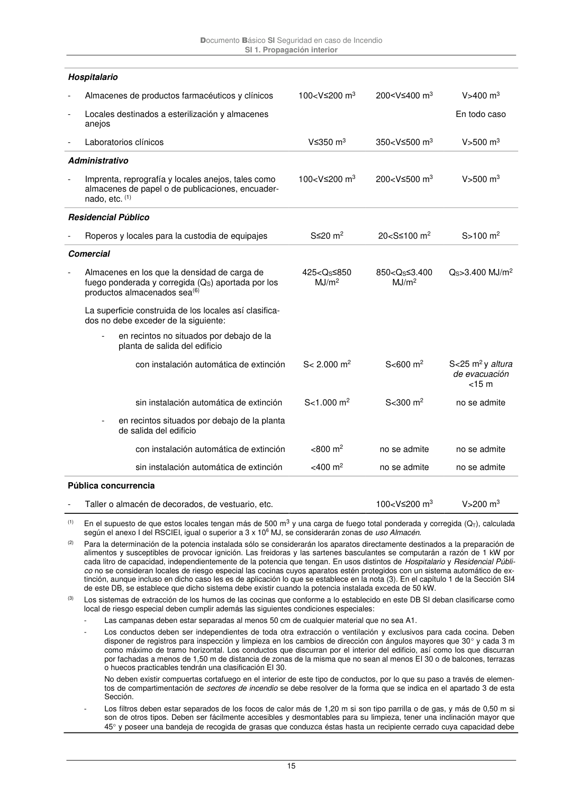

DB-SI Seguridad en caso de incendio · edición 2025-03-04 · capa oficial
Documento DB-SI-oficial · SHA-256 del PDF 0a2e78cd62471d9cc5cfe2efbc6aa39fdbad73c124aea7b039f9de96c141e105
Página física 15 de 92.
Copia fiel del PDF fuente · Fuente oficial
Ficha de la disposición en la fuente oficial
Formato: Texto de la página (Markdown)
Documento Básico SI Seguridad en caso de Incendio SI 1. Propagación interior 15 Hospitalario - Almacenes de productos farmacéuticos y clínicos 100<V≤200 m3 200<V≤400 m3 V>400 m3 - Locales destinados a esterilización y almacenes anejos En todo caso - Laboratorios clínicos V≤350 m3 350<V≤500 m3 V>500 m3 Administrativo - Imprenta, reprografía y locales anejos, tales como almacenes de papel o de publicaciones, encuader- nado, etc. (1) 100<V≤200 m3 200<V≤500 m3 V>500 m3 Residencial Público - Roperos y locales para la custodia de equipajes S≤20 m2 20<S≤100 m2 S>100 m2 Comercial - Almacenes en los que la densidad de carga de fuego ponderada y corregida (QS) aportada por los productos almacenados sea(6) 425<QS≤850 MJ/m2 850<QS≤3.400 MJ/m2 QS>3.400 MJ/m2 La superficie construida de los locales así clasifica- dos no debe exceder de la siguiente: - en recintos no situados por debajo de la planta de salida del edificio con instalación automática de extinción S< 2.000 m2 S<600 m2 S<25 m2 y altura de evacuación <15 m sin instalación automática de extinción S<1.000 m2 S<300 m2 no se admite - en recintos situados por debajo de la planta de salida del edificio con instalación automática de extinción <800 m2 no se admite no se admite sin instalación automática de extinción <400 m2 no se admite no se admite Pública concurrencia - Taller o almacén de decorados, de vestuario, etc. 100<V≤200 m3 V>200 m3 (1) En el supuesto de que estos locales tengan más de 500 m3 y una carga de fuego total ponderada y corregida (QT), calculada según el anexo I del RSCIEI, igual o superior a 3 x 106 MJ, se considerarán zonas de uso Almacén. (2) Para la determinación de la potencia instalada sólo se considerarán los aparatos directamente destinados a la preparación de alimentos y susceptibles de provocar ignición. Las freidoras y las sartenes basculantes se computarán a razón de 1 kW por cada litro de capacidad, independientemente de la potencia que tengan. En usos distintos de Hospitalario y Residencial Públi- co no se consideran locales de riesgo especial las cocinas cuyos aparatos estén protegidos con un sistema automático de ex- tinción, aunque incluso en dicho caso les es de aplicación lo que se establece en la nota (3). En el capítulo 1 de la Sección SI4 de este DB, se establece que dicho sistema debe existir cuando la potencia instalada exceda de 50 kW. (3) Los sistemas de extracción de los humos de las cocinas que conforme a lo establecido en este DB SI deban clasificarse como local de riesgo especial deben cumplir además las siguientes condiciones especiales: - Las campanas deben estar separadas al menos 50 cm de cualquier material que no sea A1. - Los conductos deben ser independientes de toda otra extracción o ventilación y exclusivos para cada cocina. Deben disponer de registros para inspección y limpieza en los cambios de dirección con ángulos mayores que 30 y cada 3 m como máximo de tramo horizontal. Los conductos que discurran por el interior del edificio, así como los que discurran por fachadas a menos de 1,50 m de distancia de zonas de la misma que no sean al menos EI 30 o de balcones, terrazas o huecos practicables tendrán una clasificación EI 30. No deben existir compuertas cortafuego en el interior de este tipo de conductos, por lo que su paso a través de elemen- tos de compartimentación de sectores de incendio se debe resolver de la forma que se indica en el apartado 3 de esta Sección. - Los filtros deben estar separados de los focos de calor más de 1,20 m si son tipo parrilla o de gas, y más de 0,50 m si son de otros tipos. Deben ser fácilmente accesibles y desmontables para su limpieza, tener una inclinación mayor que 45 y poseer una bandeja de recogida de grasas que conduzca éstas hasta un recipiente cerrado cuya capacidad debe
